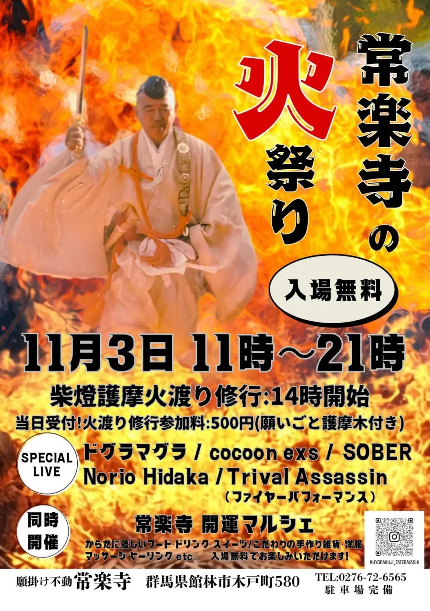
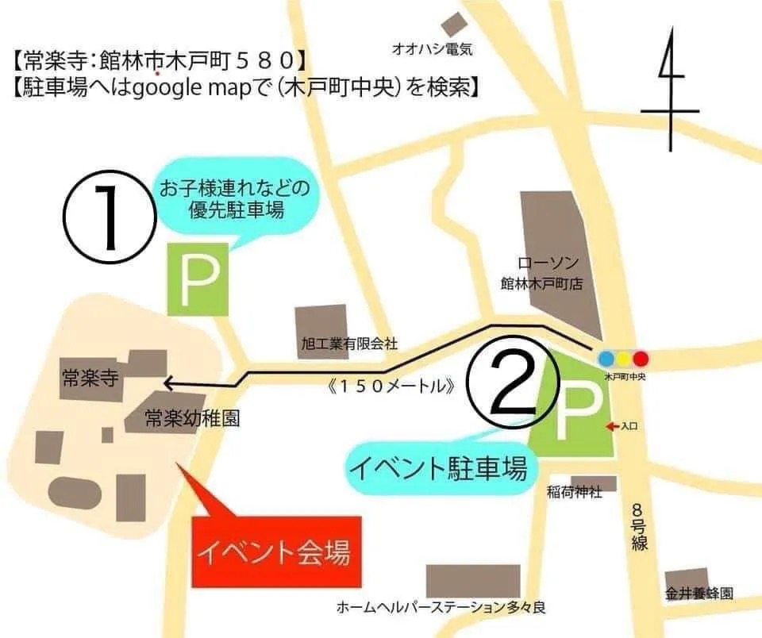

Jorakuji Himatsuri (Fire Festival)

2026年11月3日
開催時間
群馬県館林市木戸町580
11月3日(火・祝)、群馬県館林市の常楽寺で開催される「常楽寺の火祭り」に出演します。柴燈護摩の火渡り修行や開運マルシェも同時開催。入場無料です。ぜひお越しください。
SPECIAL LIVEにcocoon exsとして出演。共演はドグラマグラ、SOBER、Norio Hidaka、Trival Assassin(ファイヤーパフォーマンス)。
同時開催の常楽寺 開運マルシェ(フード・雑貨・ヒーリングなど)、柴燈護摩火渡り修行(14:00開始、参加料500円・願いごと護摩木付き)もあわせてお楽しみください。
駐車場は、会場近くの「木戸町中央」交差点付近にイベント駐車場があります。
We'll be playing the SPECIAL LIVE at Jorakuji Himatsuri (Fire Festival), held on Tuesday, November 3 (a national holiday) at Jorakuji Temple in Tatebayashi, Gunma. A Saito Goma fire-walking ritual and the Jorakuji Kaiun Marché run alongside it. Admission is free — come join us.
cocoon exs plays the SPECIAL LIVE alongside Doguramagura, SOBER, Norio Hidaka, and Trival Assassin (fire performance).
Also running that day: the Jorakuji Kaiun Marché (food, goods, healing, and more) and the Saito Goma fire-walking ritual (starts 14:00; 500 yen to take part, which includes a prayer wood tablet).
Parking: an event parking area is available near the "Kidomachi Chūō" intersection, close to the venue.
